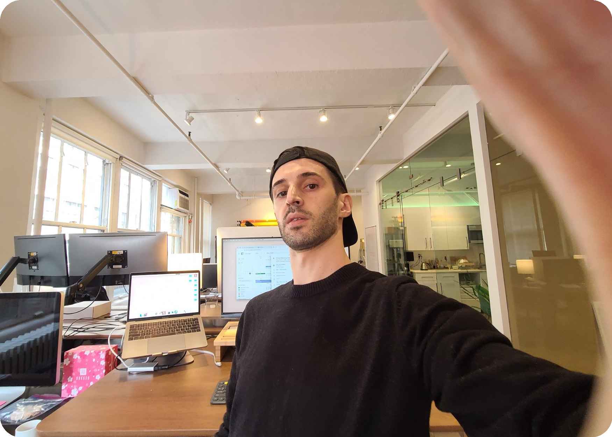

Ecommerce, operations & building with AIBased in New York
Learning by building.
I’m Kelan. I started in customer support and kept getting more involved in how things work—and how to make them better.
Today, I’m helping modernize Easy USA, an established wholesale business. I work hands-on with AI to improve the store, connect its systems, and lay the groundwork for what comes next.
A new Shopify store is one part of the work. Behind it are customer account workflows, cleaner product information, and internal tools—practical changes that give the business more room to grow.
Rebuilding apps, automations, and connections during a Shopify Plus organization move.
03 / A bit about me
Still figuring things out.

My work has grown from customer support into operations, ecommerce, and leading a development team. Each step got me closer to building the things I thought could work better.
I like hands-on work. Even when I’m leading a team, I like being involved in figuring things out and building them.
AI is a substantial part of how I work now. It’s helped me take on projects I couldn’t have built the same way before, and it keeps giving me new things to learn.
A work-in-progress ambient music instrument that turns live weather into sound. Temperature, wind, and precipitation shape the tempo, harmony, and texture.